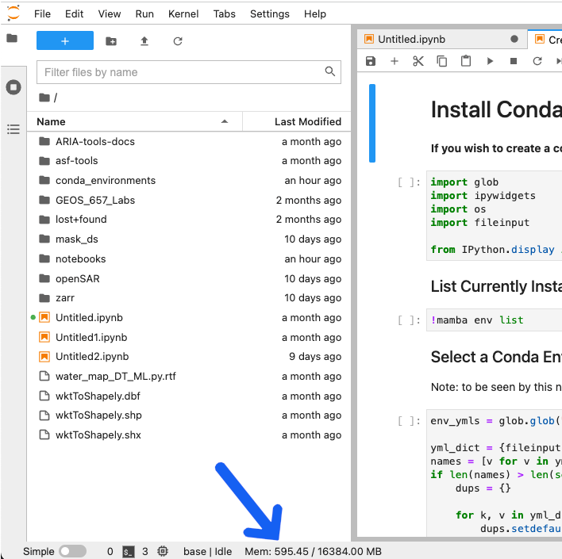
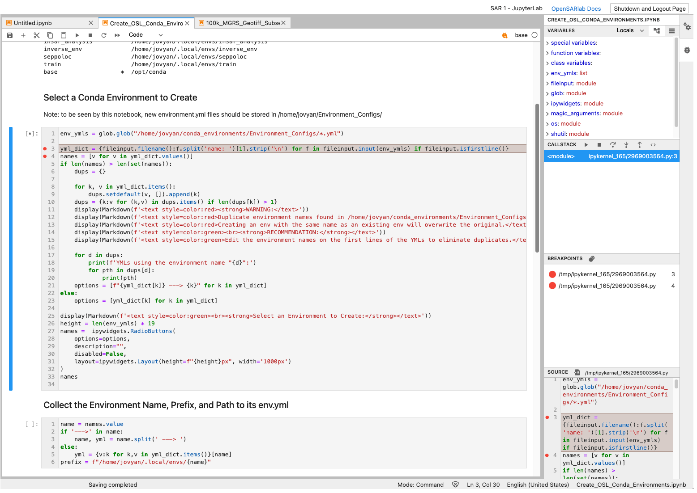

Welcome to the February 2022 OpenSARLab Update!
Changes:
- Ubuntu 20.04.3 LTS
- JupyterLab
- Matplotlib widget
- Url-widget
- New memory monitor location
- Notebook Debugger
- Mamba
- Mamba Gator
- Spellchecker
- Custom extensions
- Recommended Jupyter Notebook changes related to update
Ubuntu 20.04.3 LTS
- JupyterHub is now running on Ubuntu 20.04.3 LTS, updated from Ubuntu 18.04
JupyterLab
- There are now JupyterLab profiles available alongside the Classic Jupyter Notebook profiles. JupyterLab comes with many more features than Classic Jupyter Notebook (see the JupyterLab Docs) for more information.
- Classic Jupyter Notebook profiles will remain active for 1 month before being deprecated on March 7th.
Matplotlib widget
matplotlib notebookhas been replaced withmatplotlib widgetfor interactive matplotlib plots.matplotlib notebookwill not work in JupyterLab, whereasmatplotlib widgetworks in both JupyterLab and Classic Jupyter Notebook.
Url-widget
- The
url-widgetpackage is now installed, allowing notebook Python kernels access to the current notebook's URL.- This is useful for dynamically creating links to files and notebooks in OpenSARlab, and it is used in the kernel checking code at the beginning of ASF provided notebooks.
New Memory Monitor Location
- JupyterLab comes with a built-in memory monitor, replacing the jupyter-resource-usage extension.
- The new memory monitor can be found in the status bar at the bottom of the JupyterLab screen.

Notebook Debugger
- JupyterLab comes with a built-in notebook debugger.

Mamba
- The mamba package manager is now available in OpenSARlab.
- Mamba is a multi-threaded "reimplementation of the conda package manager in C++."
- It creates environments much more quickly than conda.
- The opensarlab-envs repo has been updated to use mamba.
Mamba Gator is installed
- mamba gator provides a GUI for managing conda/mamba environments that is accessible in JupyterLab.
- Access mamba gator by selecting the
Conda Packages Managerfrom theSettingsmenu.
- Access mamba gator by selecting the
Spellchecker
- The spellchecker extension is installed.
- It checks spelling in markdown cells.
- The language may be changed in the status bar at the bottom of the screen.

Custom Extensions
- We have added some custom JupyterLab extensions to duplicate custom features previously added in OpenSARlab for Jupyter Notebooks.
- opensarlab-profile-label provides the name of the current OpenSARlab profile in the topbar.
- opensarlab-doc-link provides a link to the OpenSARlab documentation in the topbar.
- opensarlab-controlbtn provides a
Shutdown and Logout Pagebutton in the topbar. - opensarlab-notifications provides similar functionality to the popup notifications used in the OpenSARlab Classic Jupyter Notebook profiles.
Recommended Jupyter Notebook Changes
The following bullet points cover code changes you may need to make to your notebooks for them to work in JupyterLab
note: These changes are backwards compatible and updated notebooks will still run in Jupyter Notebook.
note: All ASF notebooks have already been updated.
- The javascript variable
Jupyter.notebook.kerneldoes not exist in JupyterLab.- If you need a Python variable containing a notebook's current Python kernel, run:
env = !echo $CONDA_PREFIX
- If you need a Python variable containing a notebook's current Python kernel, run:
- The javascript variable
window.locationdoes not exist in JupyterLab- If you need the current url of your Jupyter workspace, install the
url-widgetpackage in your conda environment and use it to retrieve the url:
- If you need the current url of your Jupyter workspace, install the
# In one cell
import url_widget as url_w
notebook_url = url_w.URLWidget()
display(notebook_url)
# In a following cell
notebook_url = notebook_url.value
%matplotlib notebookdoes not work for interactive plotting in JupyterLab- Instead, use:
%matplotlib widget
- Instead, use:
asf_notebook.pyis deprecated and has been replaced withopensarlab-lib: https://github.com/ASFOpenSARlab/opensarlab-libasf_notebook.pystill works (with deprecation warnings) but it is not being maintained.- Install
opensarlab-libwith one of the following commands:python -m pip install opensarlab-libconda install -n <environment_name> -c conda-forge opensarlab-lib
- Alternatively, you may add
environment.ymlas a dependency and use it instead.